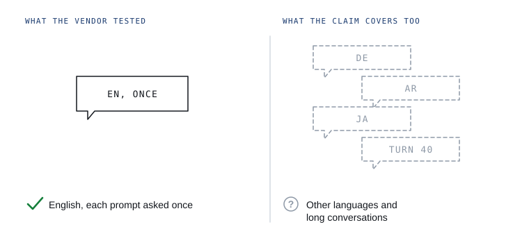

AI labs: checking AI claims before you rely on them
For anyone relying on a general-purpose AI model. The Casebook has 8 public cases from AI labs where an AI error caused harm.
What the AI did
What came of it
What kind of record backs each case
Each case is counted under the record behind it, because a court's finding and a settlement don't prove the same thing. The Casebook names no one and gives no dollar amounts. As of November 23, 2026.
- An admission
- The company, agency or person involved said so in public.
- 8
Anyone relying on a general-purpose model can already ask for the evidence
These are the rules a company, agency or investor relying on a general-purpose AI model can point to.
- California SB 53. Signed September 29, 2025. Large frontier developers must publish frontier AI frameworks and send summaries of their risk assessments to the state.
- California SB 813 and AB 1405. Signed in 2026. SB 813 has the state set up a process, by January 1, 2028, to designate AI auditors as independent verification organizations. AB 1405 creates a registry for AI auditors with standards for independence, transparency and integrity.
- New York. The RAISE Act sets safety and reporting duties for covered frontier developers from January 1, 2027. A separate bill, S10731, would require each large developer to retain an independent frontier examiner; it was referred to committee on October 28, 2026.
- Federal purchases. OMB Memorandum M-26-04 has agencies buying a large language model get documentation from the developer, such as model, system or data cards.
- If you sell into Europe. The EU AI Act sets obligations for providers of general-purpose AI models, supervised and enforced by the European Commission's AI Office.
Where an outside check fits work you already do
- After the shortlist. Before you accept a model, agree on the version, the use, what counts as failure and what evidence you can see. Then have the claims you rely on examined. See the sample requirement.
- In a deal. If you're investing in or buying a company whose value rests on its model, the check can be a condition of closing. See the page for investors.
- Before release. A lab's own safety lead can make an outside look at a public claim a condition of release.
You can start with a pilot: a first look at one AI product, for a fixed $9,000.
Sources
- California Governor, SB 53 signing (gov.ca.gov)
- California Assembly, SB 53 oversight background paper, October 2026 (assembly.ca.gov)
- California GovOps, AI Safety in 2026 and Beyond (govops.ca.gov)
- New York A9449, RAISE Act chapter amendment (nysenate.gov)
- New York S10731 (nysenate.gov)
- OMB Memorandum M-26-04 (whitehouse.gov)
- European Commission, general-purpose AI models Q&A (europa.eu)
What a check could look like in AI labs
Made up for this page. No real product or company. Each claim gets the same two findings, signed by the examiner and released by a second reviewer.
The claim
"Our model refuses unsafe requests 99% of the time."
Finding 1, how far the evidence reaches: Sound, but short of the claim. The vendor's test holds up, but every prompt was in English and asked once. The claim covers any request.
Finding 2, sound evidence the claim is false: None found inside the claim's scope. The evidence doesn't reach other languages or longer conversations.

You can require an outside check
If your decision rests on what a vendor says its AI product does, you can make an outside check of that claim a condition of the purchase, the policy or the deal. The report comes only to you.
For buyers and public agencies · For investors and acquirers · How it works
Other industries
Government · Policing and courts · Schools · Healthcare · Insurance · Banking and markets · Legal · Transportation · Energy and industry · Construction · Hiring and work · News and publishing · Software and agents · Customer service